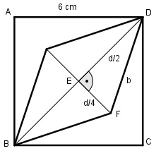

Aufgabe 200 Aus einem quadratischen Blech mit der Seitenlänge 6 cm soll eine Raute ausgeschnitten werden, dessen eine Diagonale so groß ist wie die Diagonale des Quadrates, die andere halb so lang. Wie groß sind der Blechverlust V und die Seitenlänge b der Raute?

Satz von Pythagoras im Dreieck BCD: d2 = 62 + 62 = 72 |√ d = 8,5 cm Satz von Pythagoras im Dreieck EFD: d d b2 = (---)2 + (---)2 2 4 8,5 8,5 b2 = (------)2 + (-----)2 2 4 b2 = 18,1 + 4,5 = 22,6 |√ b = 4,8 cm Verlust V = Quadrat – Raute 8,5 * (8,5/2) V = 62 - --------------- = 36 – 18,1 = 17,9 cm2 2